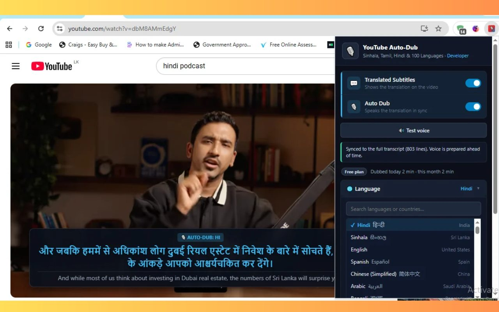
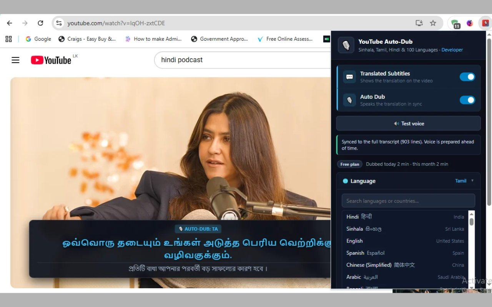
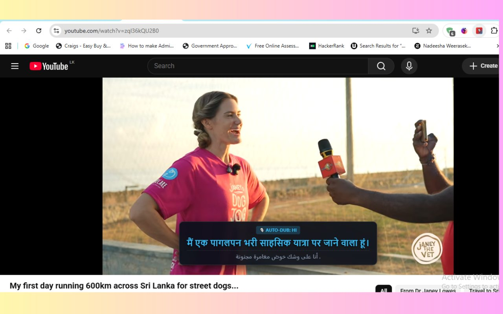
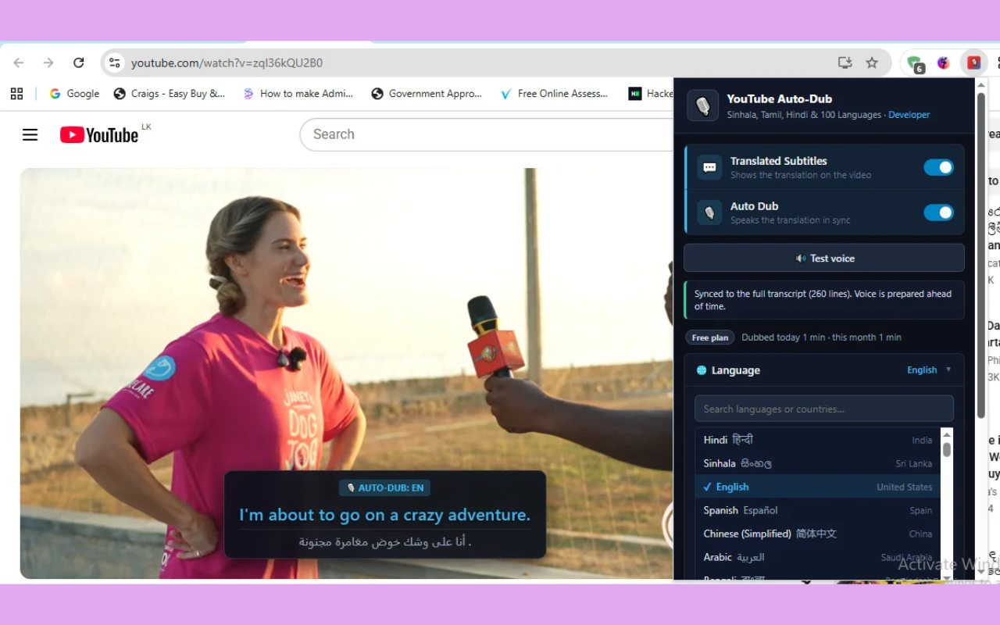
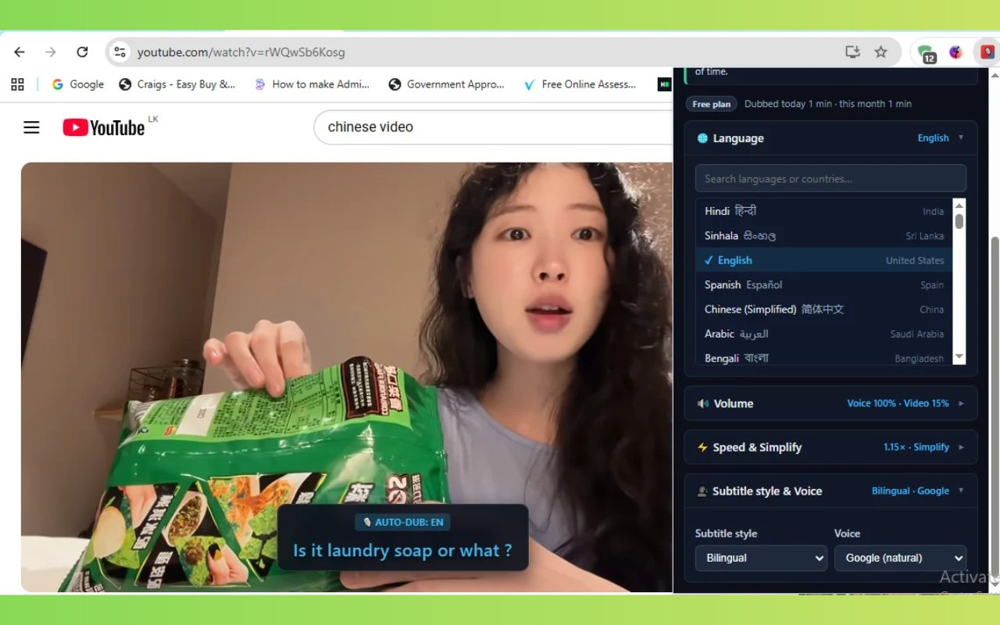
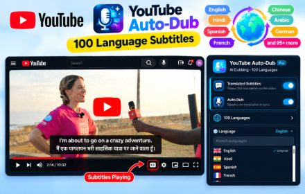

Real-time voice dubbing
Hear the video in your language. Each line is prepared ahead of time and spoken exactly when it is said in the video.
YouTube Auto-Dub translates YouTube videos as you watch, with natural voice dubbing and translated subtitles in Sinhala, Tamil, Hindi and 100+ other languages.
Works in Google Chrome, Microsoft Edge and Brave · No sign-up

Turn on subtitles, dubbing, or both. Everything works automatically once a video starts.
Hear the video in your language. Each line is prepared ahead of time and spoken exactly when it is said in the video.
Clear subtitles on the video in your language, or bilingual mode with the original line underneath for learning.
Sinhala, Tamil, Hindi, Bengali, Arabic, Chinese, Spanish and many more, with natural voices even for languages your computer has no voice for.
When a sentence is too long for the gap, the voice speeds up a little or says a shorter version, so the dub never falls behind.
The original audio fades down while the dub speaks and comes back between lines. You choose both volumes.
No account, no tracking. Your settings stay on your device. Read the privacy policy.
No setup or account needed.
Install YouTube Auto-Dub from the Chrome Web Store. Subtitles and dubbing are on by default.
Click the extension icon and pick your language, for example Sinhala, Tamil or Hindi.
Open a YouTube video with captions. The translated subtitles and voice start automatically.
Real screenshots of YouTube Auto-Dub on YouTube videos.






Including the languages most YouTube tools leave out.
Yes. YouTube Auto-Dub is free to install and use, with no account or sign-up.
More than 100 languages, including Sinhala, Tamil, Hindi, Bengali, English, Spanish, Arabic, Chinese, French, German and many more.
Yes. The extension translates the video's captions, including YouTube's automatic captions. It switches captions on for you if needed. Videos without any captions cannot be dubbed.
Yes. It works in Google Chrome and in Chromium-based browsers such as Microsoft Edge and Brave.
No. Your settings stay on your device. Only the caption text of the video you are watching is sent to Google Translate to translate it and create the voice. Nothing is sent to the developer. See the privacy policy.
Some languages take longer to say than the original. To stay in sync, the voice speeds up slightly and, with Smart simplify on, says a shorter version of long sentences. Subtitles always show the full translation.
Install YouTube Auto-Dub and start watching videos in your own language today.
Add to Chrome – it's freeSenior Software Engineer in Colombo, Sri Lanka. Questions or ideas? nadeesha.weerasekara95@gmail.com